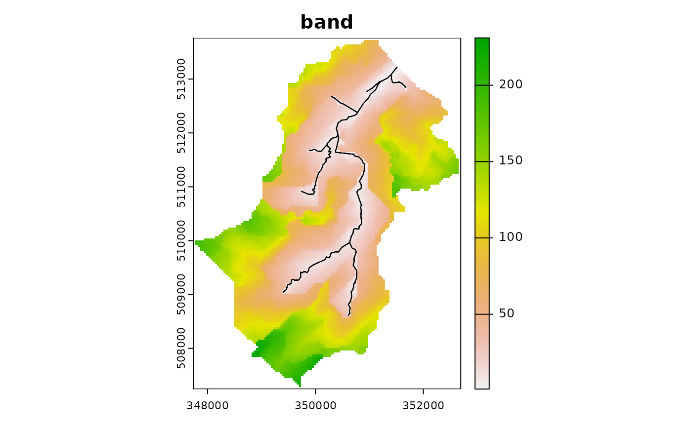
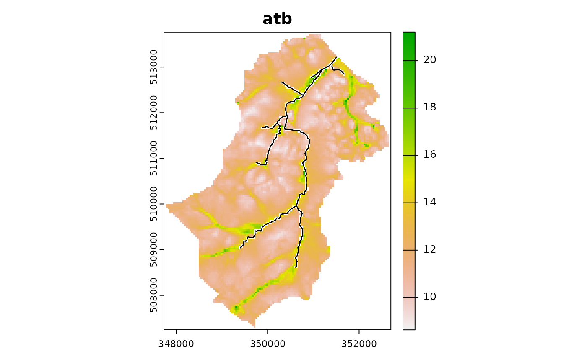
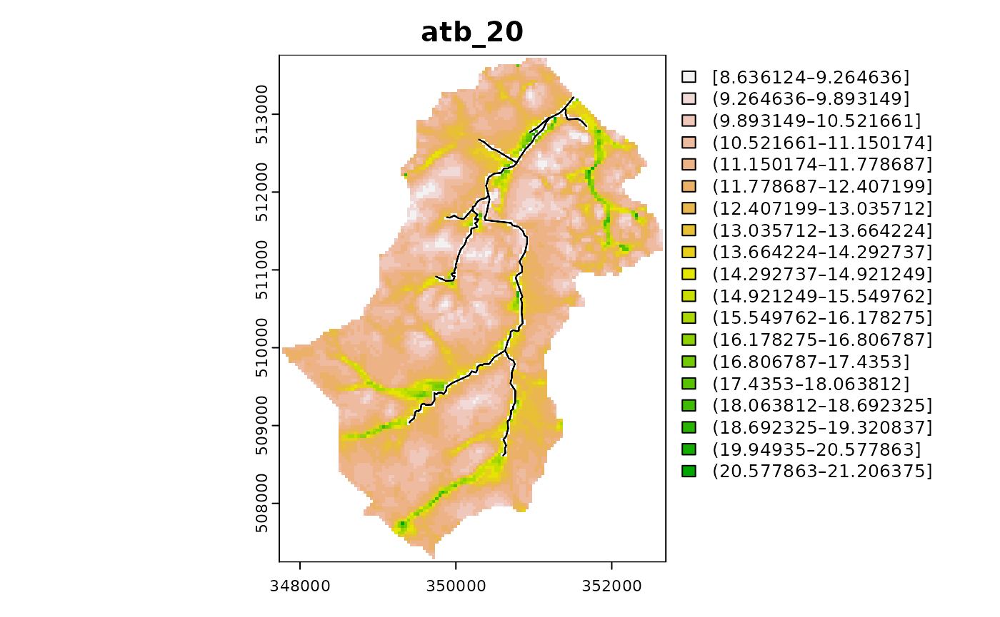

The purpose of this vignette is to provide an outline of the steps needed to build a dynamic TOPMODEL implementation using the dynatopGIS package.
Implementation notes
The dynatopGIS package implements a structured, object orientated,
data flow. The steps outlined below create a dynatopGIS
catchment object to which actions are then applied to generate a
model.
The dynatopGIS package is written using the object
orientated framework provided by the R6 package. This means
that some aspects of working with the objects may appear idiosyncratic
for some R users. In using the package as outlined in this vignette
these problems are largely obscured, except for the call structure.
However, before adapting the code, or doing more complex analysis users
should read about R6 class objects (e.g. in the
R6 package vignettes or in the Advanced R book). One
particular gotcha is when copying an object. Using
my_new_object <- my_objectcreates a pointer, that is altering my_new_object also
alters my_object. To create a new independent copy of
my_object use
my_new_object <- my_object$clone()Getting started
The dynatopGIS packages works through a number of steps to generate a
Dynamic TOPMODEL object suitable for use in with the
dynatop package. Each step generates one or more layers
which are saved as raster or shape files into the projects working
directory (which is not necessarily the R working directory). A record
of these layers is kept in the json format meta data file.
This vignette demonstrates the use of the dynatopGIS
package using data from the Swindale catchment in the UK.
To start first load the library
For this vignette we will store the data into a temporary directory
demo_dir <- tempfile("dygis")
dir.create(demo_dir)and initialise the analysis by creating a new object specifying the location of the meta data file, which will be created if it doesn’t exist.
ctch <- dynatopGIS$new(file.path(demo_dir))
#> Starting new project at /tmp/RtmpYJ5ZBV/dygis1c2a3f5734d8Adding catchment data
The basis of the analysis is a rasterised Digital Elevation Model
(DEM) of the catchment and a vectorised representation of the river
network with attributes. Currently these can be in any format supported
by the terra library.
However, within the calculations used for sink filling, flow routing and topographic index calculations the raster DEM is presumed to be projected so that is has square cells such that the difference between the cell centres (in meters) does not alter.
For Swindale the suitable DEM and channel files can be found using:
dem_file <- system.file("extdata", "SwindaleDTM40m.tif", package="dynatopGIS", mustWork = TRUE)
channel_file <- system.file("extdata", "SwindaleRiverNetwork.shp", package="dynatopGIS", mustWork = TRUE)Before adding either the DEM or channel a raster map of the catchment outline must be provided. This defines not only the catchment boundaries but also, if required, subcatchments, each of which must be given a unique number. The projection and resolution of this map is used in all subsequent GIS processing
In this example the catchment map is generated from the DEM, which,
by convention must contain a edge rows and columns containing only
NA values.
dem <- terra::rast(dem_file)
dem <- terra::extend(dem,1) ## pad with NA values
catchment_outline <- terra::ifel(is.finite(dem),1,NA)
ctch$add_catchment(catchment_outline)Either the DEM or channel files can be added to the project first. In this case we add the DEM with
ctch$add_dem(dem)Adding river channel data is more complex. The
add_channel method requires a SpatVector
object (or a file name that can be loaded as a SpatVect
object). Each vector object is treated as a length of river channel
which requires the following properties
- name - a label for the channel length
- endNode - a label for the downstream end of the river length
- startNode - a label for the upstream end of the river length
- length - the length in meters
- area - surface area in square meters
- width - width of the channel
- slope - bed slope of the channel
Additional properties are currently kept but ignored with the exception of id which is overwritten.
Since it is possible that these properties are present in a data file
under different names some basic preprocessing may be required. The
convert_channel function is designed to help with this. To
illustrate this let us examine the river network for Swindale
sp_lines <- terra::vect(channel_file)
#> Warning: [vect] Z coordinates ignored
head(sp_lines)
#> class : SpatVector
#> geometry : lines
#> dimensions : 6, 11 (geometries, attributes)
#> extent : 349884.5, 351675.7, 508614.5, 513074.7 (xmin, xmax, ymin, ymax)
#> coord. ref. : OSGB36 / British National Grid (EPSG:27700)
#> names : name1 identifier startNode endNode
#> type : <chr> <chr> <chr> <chr>
#> values : Hawthorn Gill 16D0AC09-E0B6-~ 730F01D2-0F4F-~ 72B1A40B-E106-~
#> Little Mosedal~ 643017BB-01BC-~ 9B06188C-F4C7-~ A19E0D3A-2FA1-~
#> Mosedale Beck D2C2703E-A32F-~ B03DB3BD-0E33-~ D649B60C-E631-~
#> form flow fictitious length name2 sinkdepth Shape_Leng
#> <chr> <chr> <chr> <int> <chr> <num> <num>
#> inlandRiver in direction false 431 NA -1 431.3
#> inlandRiver in direction false 513 NA -1 513.1
#> inlandRiver in direction false 740 NA -1 739.8Some of the main properties are present under appropriate names
(startNode, endNode, length) but the remainder are missing. Also the
river network is defined as a series of lines, rather then polygons. The
convert_channel function addresses these shortcomings by -
changing the names of the required properties - buffering the line
objects to create polygons
The convert_channel function takes a named vector giving
the variable names to be use for the properties. If we want to carry
over the identifier as the name we could call
convert_channel with as follows:
property_names <- c(name="name1",
endNode="endNode",
startNode="startNode",
length="length")
chn <- convert_channel(sp_lines,property_names)
#> Warning in convert_channel(sp_lines, property_names): Modifying to spatial
#> polygons using default width
#> Warning in convert_channel(sp_lines, property_names): Adding default slopeSince the data set for Swindale does not contain a channel width or slope default values are used and warnings issued.
The river network can then be added to the project by
ctch$add_channel(chn)Getting and plotting catchment information
The dynatopGIS class has methods for returning and
plotting the GIS data in the project. The names of all the different GIS
layers stored is returned by
ctch$get_layer()
#> layer source
#> 1 catchment /tmp/RtmpYJ5ZBV/dygis1c2a3f5734d8/catchment.tif
#> 2 dem /tmp/RtmpYJ5ZBV/dygis1c2a3f5734d8/dem.tif
#> 3 channel /tmp/RtmpYJ5ZBV/dygis1c2a3f5734d8/channel.tif
#> 4 channel_vect /tmp/RtmpYJ5ZBV/dygis1c2a3f5734d8/channel.shpThese can be plotted (with or without the channel), for example
ctch$plot_layer("dem", add_channel=TRUE)
or returned, for example
ctch$get_layer("dem")
#> class : SpatRaster
#> dimensions : 163, 124, 1 (nrow, ncol, nlyr)
#> resolution : 40, 40 (x, y)
#> extent : 347734, 352694, 507244, 513764 (xmin, xmax, ymin, ymax)
#> coord. ref. : +proj=tmerc +lat_0=49 +lon_0=-2 +k=0.9996012717 +x_0=400000 +y_0=-100000 +ellps=airy +units=m +no_defs
#> source : dem.tif
#> name : dem
#> min value : 262.8004
#> max value : 710.7533All layers are returned as SpatRast objects with the
exception of the channel_vect layer which is returned as a
SpatVect object.
Filling sinks
For the hill slope to be connected to the river network all DEM cells
must drain to those that intersect with the river network. The algorithm
implemented in the sink_fill method ensures this is the
case. In calling the sink_fill method a flow direction
algorithm is specified and the resulting flow paths recorded. If
subcatchments are present in the catchment map then only flow paths
within the subcatchment are considered.
The algorithm of used by the sink_fill method is
iterative and the execution time of the function is limited by capping
the maximum number of iterations. If this limit is reached without
completion the method can call again with the “hot start” option to
continue from where it finished.
For Swindale, where the example DEM is already partially filled the algorithm only alters a small area near the foot of the catchment.
ctch$sink_fill()
terra::plot( ctch$get_layer('filled_dem') - ctch$get_layer('dem'),
main="Changes to height")
Determining Ordering
The computational scheme in the dynatop package works
with an ordered sequence of HRUs constructed such that the sequence
moves downslope to catchment outlet. This is achieved by banding the
channel reaches and hillslope cells such that the catchment outlet(s)
are in band 1, those cells or reaches draining only into band 1 are in
band 2 and so forth. banding is achieved by the following call
ctch$compute_band()
ctch$plot_layer("band")
Computing properties
Two sets of properties are required for Dynamic TOPMODEL. The first set is those required within the evaluation of the model; gradient and contour length. The second set are those used for dividing the catchment up into Hydrological Response Units (HRUs). Traditionally the summary used for the separation of the HRUs is the topographic index, which is the natural logarithm of the upslope area divided by gradient.
These are computed using the formulae in Quinn et al. 1991.
The upstream area is computed by routing down slope with the fraction of the area being routed to the next downstream pixel being proportional to the gradient times the contour length.
The local value of the gradient is computed using the average of a subset of between pixel gradients. For a normal ‘hill slope’ cell these are the gradients to downslope pixels weighted by contour length. In the case of pixels which contain river channels the average of the gradients from upslope pixels weighted by contour length us used.
These properties are computed in an algorithm that passes over the data once in descending height. It is called as follows
ctch$compute_properties()The plot of the topographic index shows a pattern of increasing values closer to the river channels
## plot of topographic index (log(a/tan b))
ctch$plot_layer('atb')
Although not used in ordering the HRUs dynatopGIS also
provides the ability to compute flow distances for the hill slope cells.
The calculation of three distances is supported
- shortest flow length - the shortest length based on the pixel flow paths to a channel
- Dominant flow length - the distance to a channel moving in the dominant (largest fraction) flow direction from any grid cell
- Expected flow length - the distance to the channel based on a weighted average of the down-slope flow lengths. Weights are given by the fraction of flow in each direction.
The computation, in this example for the shortest flow length, is initiated with
ctch$compute_flow_lengths(flow_routing="shortest")The additional layers can be examined as expected
ctch$get_layer()
#> layer
#> 1 catchment
#> 2 dem
#> 3 channel
#> 4 filled_dem
#> 5 band
#> 6 gradient
#> 7 upslope_area
#> 8 atb
#> 9 shortest_flow_length
#> 10 channel_vect
#> source
#> 1 /tmp/RtmpYJ5ZBV/dygis1c2a3f5734d8/catchment.tif
#> 2 /tmp/RtmpYJ5ZBV/dygis1c2a3f5734d8/dem.tif
#> 3 /tmp/RtmpYJ5ZBV/dygis1c2a3f5734d8/channel.tif
#> 4 /tmp/RtmpYJ5ZBV/dygis1c2a3f5734d8/filled_dem.tif
#> 5 /tmp/RtmpYJ5ZBV/dygis1c2a3f5734d8/band.tif
#> 6 /tmp/RtmpYJ5ZBV/dygis1c2a3f5734d8/gradient.tif
#> 7 /tmp/RtmpYJ5ZBV/dygis1c2a3f5734d8/upslope_area.tif
#> 8 /tmp/RtmpYJ5ZBV/dygis1c2a3f5734d8/atb.tif
#> 9 /tmp/RtmpYJ5ZBV/dygis1c2a3f5734d8/shortest_flow_length.tif
#> 10 /tmp/RtmpYJ5ZBV/dygis1c2a3f5734d8/channel.shp
ctch$plot_layer("shortest_flow_length")
Adding additional layer
Properties may come in additional GIS layers. To demonstrate the addition of an additional layer we will extract the filled dem
tmp <- ctch$get_layer("filled_dem")then separate it into a layers representing land above and below 500m.
## T
tmp <- terra::ifel(tmp<=500,NA,-999)The resulting raster object can now be added to the project with
ctch$add_layer(tmp, "greater_500")
ctch$get_layer()
#> layer
#> 1 catchment
#> 2 dem
#> 3 channel
#> 4 filled_dem
#> 5 band
#> 6 gradient
#> 7 upslope_area
#> 8 atb
#> 9 shortest_flow_length
#> 10 greater_500
#> 11 channel_vect
#> source
#> 1 /tmp/RtmpYJ5ZBV/dygis1c2a3f5734d8/catchment.tif
#> 2 /tmp/RtmpYJ5ZBV/dygis1c2a3f5734d8/dem.tif
#> 3 /tmp/RtmpYJ5ZBV/dygis1c2a3f5734d8/channel.tif
#> 4 /tmp/RtmpYJ5ZBV/dygis1c2a3f5734d8/filled_dem.tif
#> 5 /tmp/RtmpYJ5ZBV/dygis1c2a3f5734d8/band.tif
#> 6 /tmp/RtmpYJ5ZBV/dygis1c2a3f5734d8/gradient.tif
#> 7 /tmp/RtmpYJ5ZBV/dygis1c2a3f5734d8/upslope_area.tif
#> 8 /tmp/RtmpYJ5ZBV/dygis1c2a3f5734d8/atb.tif
#> 9 /tmp/RtmpYJ5ZBV/dygis1c2a3f5734d8/shortest_flow_length.tif
#> 10 /tmp/RtmpYJ5ZBV/dygis1c2a3f5734d8/greater_500.tif
#> 11 /tmp/RtmpYJ5ZBV/dygis1c2a3f5734d8/channel.shpClassifying into Hydrological Response Units
Methods are provided for the classification of the catchment areas of
similar hydrological response. The classifications generated in this
process are augmented with a further distance based separation when
generating a dynatop model (see following section).
By definition each channel length is treated as belonging to a single class.
To classify the hillslope two methods can be used.
The classify method of a dynatopGIS allows
a landscape property to be cut into classes.
For example to cut the topographic index for Swindale into 21 classes:
ctch$classify("atb_20","atb",cuts=20)
ctch$plot_layer("atb_20")
Providing a single value to the cuts argument determines the number of classes. The values used to cut the variable can be extracted from the meta data with
ctch$get_method("atb_20")
#> $type
#> [1] "classification"
#>
#> $layer
#> [1] "atb"
#>
#> $cuts
#> [1] 8.6361 9.2646 9.8931 10.5217 11.1502 11.7787 12.4072 13.0357 13.6642
#> [10] 14.2927 14.9212 15.5498 16.1783 16.8068 17.4353 18.0638 18.6923 19.3208
#> [19] 19.9493 20.5779 21.2064The combine_classes method of a dynatopGIS
allows classes to be combined in two ways, which are applied in the
order shown
- pairing - where unique combinations of classes create one new class
- burning - where a single class is imposed upon an area
To demonstrate a pairing combination consider combining the atb classes generated above with the classification provided by the distance band
ctch$combine_classes("atb_20_band",c("atb_20","band"))
ctch$plot_layer("atb_20_band")
Additionally the land greater then 500 in altitude can be burnt in with
ctch$combine_classes("atb_20_band_500",pairs=c("atb_20","band"),burns="greater_500")
ctch$plot_layer("atb_20_band_500")
The each class in the combined classification the values of the classes used in the computations can be returned
head( ctch$get_method("atb_20_band_500")$groups )
#> atb_20_band_500 atb_20 band burns
#> 1 1 4 194 TRUE
#> 2 2 5 3 FALSE
#> 3 3 7 2 FALSE
#> 4 4 6 3 FALSE
#> 5 5 7 3 FALSE
#> 6 6 6 4 FALSENote that by giving the area to be burnt in a negative value when it was generated above we have ensured that the values do not clash with those generated by the cuts which (except potentially when a cut is NA) which will always be positive.
Generating a dynamic TOPMODEL
A Dynamic TOPMODEL suitable for use with the dynatop
package can be generated using the create_model method.
This uses an existing classification to generate the model. The required
model structure is given in the vignettes of dynatop
package and is not described here in details.
Since dynatop simulations make use of ordered HRUs to
work downslope, a classification which used a distance layer (see
earlier section) which represents the ordered downslope sequencing of
the pixels is recommended.
Even if a distance layer is not used in the classification one must
be given to the create_model method, so the resulting HRUs
can be ordered.
Currently only the ‘band’ distance metric as used below will produce valid model.
For example, in the case of the division of Swindale by topographic index into 21 classes and the bands directly the resulting model can be generated by
ctch$create_model(file.path(demo_dir,"new_model"),"atb_20")Looking at the files within the demo_dir folder
list.files(demo_dir,pattern="new_model*")
#> [1] "new_model.rds" "new_model.tif"shows that an addition raster map of the HRUs has been created in
new_model.tif along with a file new_model.rds
containing a model suitable for dynatop. The values on the
map correspond to the ìd of the HRUs in the
dynatop model.